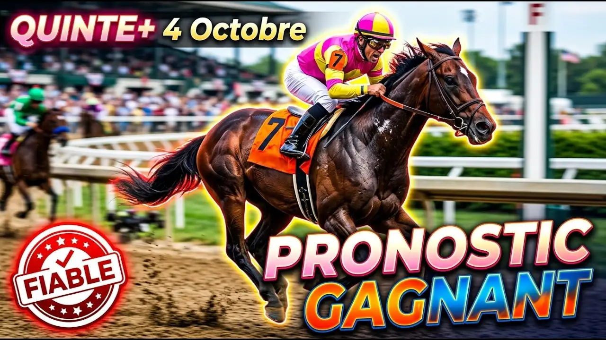

Dimanche à ParisLongchamp, c'est l'Arc. Seize chevaux, 2400 mètres, l'herbe corde à droite, un vent nord-est faible et un terrain rapide. Voilà le contexte.
Commençons par les conditions. Ce terrain rapide va avantager les chevaux puissants. La longue ligne droite de Longchamp permet aux finisseurs de se distinguer, et c'est là que se joue la course — pas en début, mais à la fin. Le jockey qui gère bien le changement de vitesse, c'est lui qui gagne.
Daryz à la corde 5, monté par Mickaël Barzalona pour Graffard. C'est le n°1 et le numéro 1 pour une raison : il a gagné l'Arc l'année dernière, puis il a remporté deux nouveaux groupes 1 à 4 ans en dominant ses rivaux. Son retour dans le Prix Foy a confirmé qu'il est au meilleur de sa forme. À 59,5 kilos, le poids maximum, il charge fort.
Le problème ? Gagner deux Arcs de suite, ça n'arrive jamais. Et il y a cette charge mentale de la faveur. Mais en toute logique, c'est lui qui doit être battu.
Kalpana à la corde 6, montée par Colin Keane pour Balding. Elle était septième l'an dernier ici, déçu. Depuis, elle a enchaîné les victoires au plus haut niveau et sa préparation a été idéale. Elle part à côté de Daryz, ce qui lui permet de suivre le favori sans gaspiller d'énergie. C'est la confirmation logique de dimanche.
Maltese Cross au n°14, monté par Tom Marquand pour Haggas. Il a gagné le Grand Prix de Paris en finissant très vite, puis s'est imposé à York de la même façon. En sept courses, jamais sorti des deux premiers. Il reçoit 3 kilos de Daryz, ce qui compte à ce niveau. Ce cheval a la tenue et le changement de vitesse d'un champion, et Longchamp, c'est parfait pour lui.
Varandir au n°11, monté par Lecoeuvre pour Graffard. Son programme calque celui de Daryz l'an dernier, et il a livré dans le Prix Niel. Physiquement il a gagné en puissance cet été, mentalement il a mûri. Tardif, il n'a pas fini de progresser. La casaque Aga Khan a l'habitude de ces histoires. C'est le type de cheval qui arrive au moment parfait.
Benvenuto Cellini au n°12 pour Ballydoyle, monté par Ryan Moore. Il a remporté l'Irish Derby avec aisance. Le Prix Niel, c'était trop lent pour lui. Mais dans le King George où il s'est bien montré, sur un rythme régulier, il devient redoutable. À la corde 1. Dix ans après Found, Aidan O'Brien pourrait bien le ramener, cet Arc.
Minnie Hauk au n°8 pour O'Brien, montée par William Buick. Deuxième l'an dernier derrière Daryz. Cette année elle n'a pas brillé, mais ça ne veut rien dire — amenée au top pour dimanche, elle vaut mieux que sa cote. Elle connaît Longchamp, elle a la tenue, et Buick aussi connaît cette piste.
Diamond Necklace au n°16 pour O'Brien, monté par Christophe Soumillon. Supplémentée pour l'occasion, ce qui prouve la confiance. Elle a un profil impeccable, une progression régulière depuis le début. Elle part de loin (corde 16) avec des oeillères australiennes et un bonnet antibruit — c'est du sérieux. Avec Soumillon, qui a déjà gagné cet Arc, elle peut prendre une place.
Friendly Soul au n°10 pour les Gosden, montée par James Doyle. Elle a écrasé les autres dans le Prix Vermeille et son entraîneur l'a supplémentée pour l'Arc. Sur 2400 mètres pour la première fois, elle s'est imposée avec autorité. Elle a connu des galères avant ça, mais elle est revenue au top. Joker de qualité pour les places.
Les autres ? Saddadd (n°2) n'est pas au niveau. Chestnut Rocket (n°3) monte clairement trop de catégories. Les deux japonais, Admire Terra (n°4) et Meisho Tabaru (n°5), oui ils ont du talent, mais l'adaptation à Longchamp c'est l'inconnue. Arrow Eagle (n°6) peut accrocher une place. Bay City Roller (n°7) aurait préféré de la souplesse. Bright Light (n°13) est un finisseur redoutable sur les 200 derniers mètres, donc il peut finir à une place aussi.
C'est une course ouverte, voilà la vérité. Daryz est là, il est fort, il est au top. Mais Kalpana peut le déranger, Maltese Cross peut accrocher, Varandir peut exploser, et puis il y a les valeurs chez O'Brien qui ne demandent qu'une occasion. Le terrain rapide va récompenser la puissance et le finisseur intelligent.
Le changement de vitesse sur la grande ligne droite, c'est là que ça se joue.
Base : 1 (Daryz)
Challengers : 9 (Kalpana), 14 (Maltese Cross)
Finisseurs : 11 (Varandir), 12 (Benvenuto Cellini)
Valeurs : 8 (Minnie Hauk), 16 (Diamond Necklace)
Joker : 10 (Friendly Soul)
Ordre de confiance : 1 - 9 - 14 - 11 - 12 - 8 - 16 - 10
Regardez l'analyse complète sur YouTube :
▶️ Pronostic Quinté Arc de Triomphe 2026